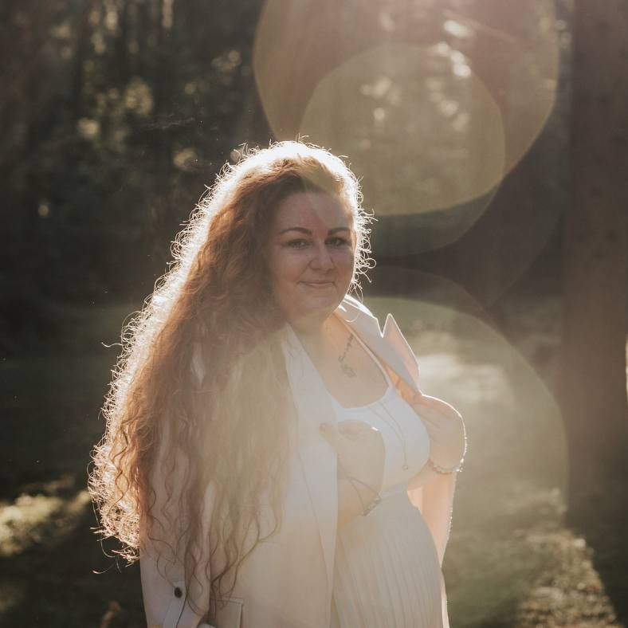
Marie Bezděkovská
Průvodkyně smrtí, lektorka
Zveme vás na druhý ročník akce, která nabízí prostor k zamyšlení, sdílení i inspiraci.
Součástí festivalu budou přednášky a workshopy, které se dotýkají otázky smrti v osobním i společenském kontextu.
Protože právě vědomí konečnosti může paradoxně probouzet chuť žít naplno, dávat životu hlubší smysl a přinášet do něj pochopení, klid a přijetí.
Program se stále sestavuje – pravidelně jej aktualizujeme.
Zobrazit podrobný program
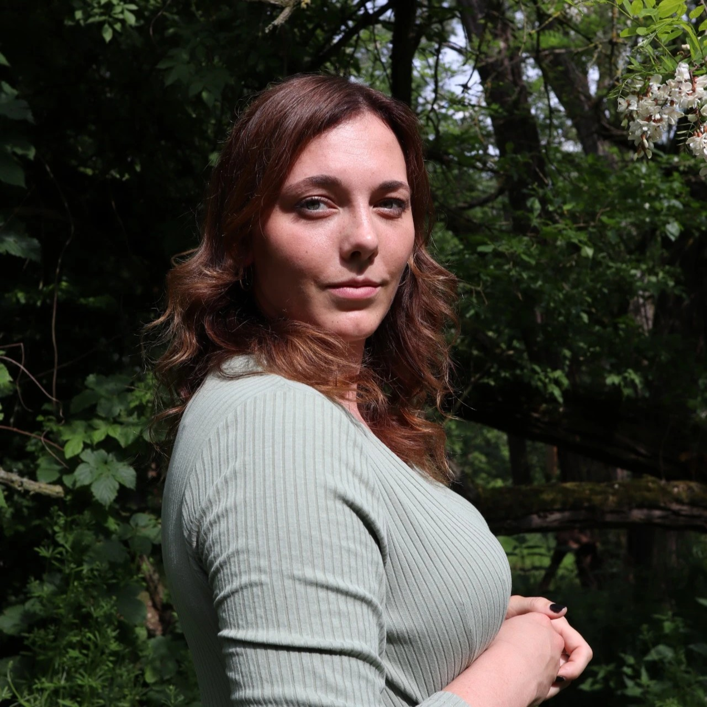
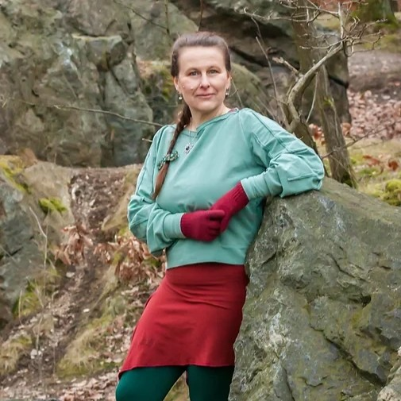
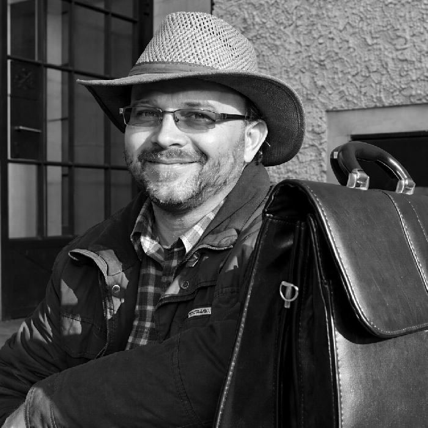
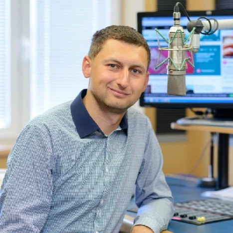
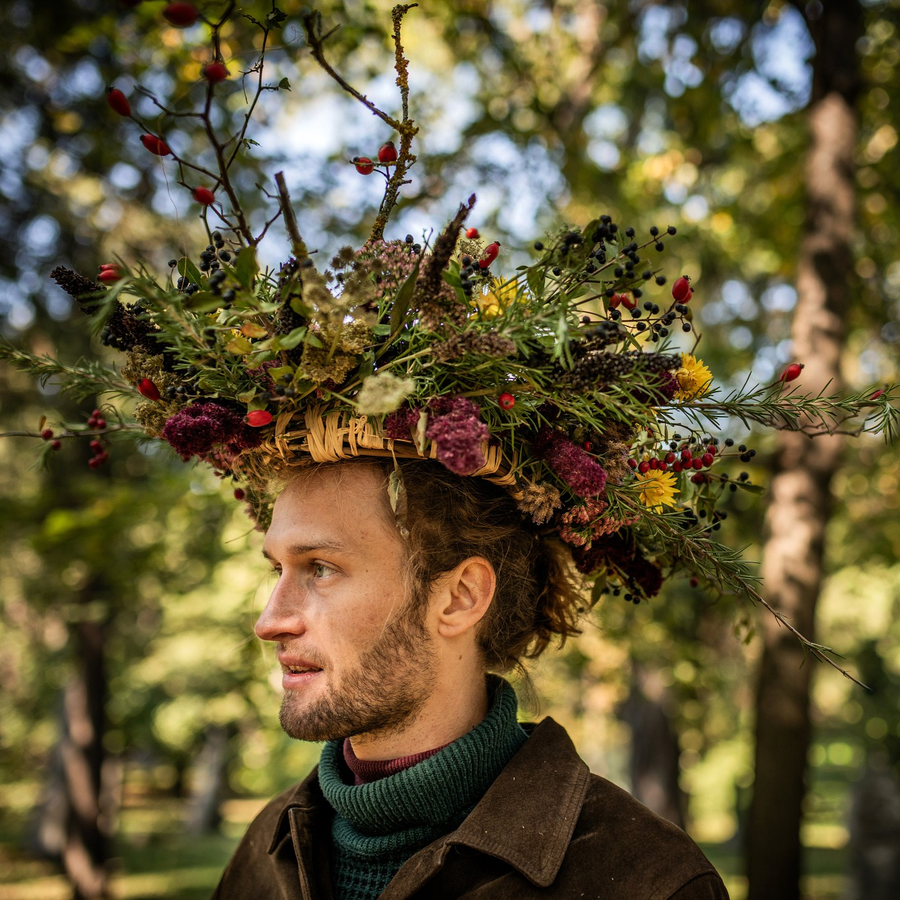
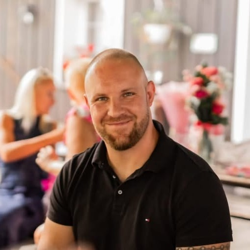
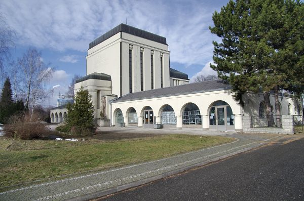
Komentovaná prohlídka krematoria v Liberci a v obci Noviny pod Ralskem.
Více informací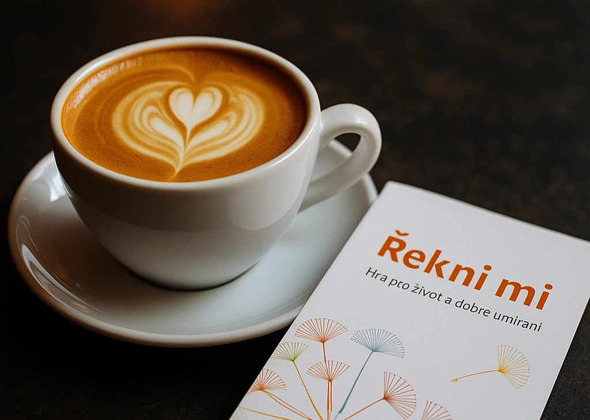
Setkání s kartami u dobré kávy. „Řekni mi" je konverzační hra pro život a dobré umírání.
Více informací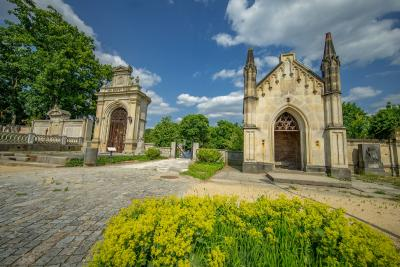
Prohlídka Zahrady vzpomínek v libereckém parku Mrtvolky s průvodcem.
Více informací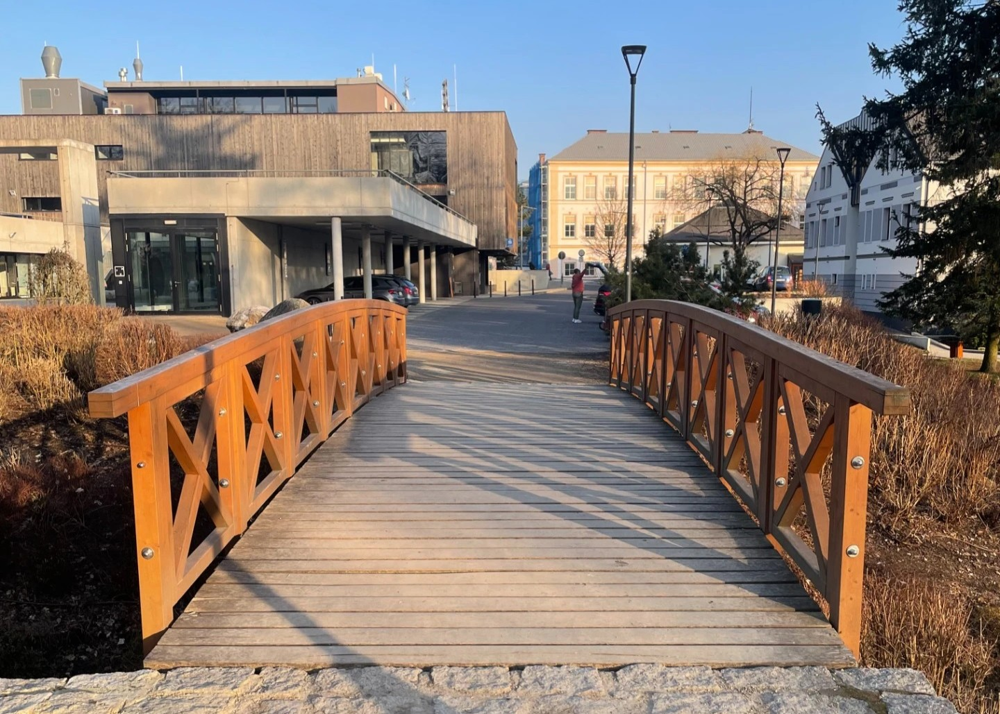
Procházka vratislavickým parkem se 7 zastaveními a jednoduchými úkoly či výzvami k zamyšlení.
Více informacíMáte děti? Přijďte zažít festival i s nimi! Děti mají vstup na festival samozřejmě zdarma. Připravili jsme pro ně i jejich rodiče speciální program, který otevírá téma smyslu, loučení a paměti přiměřeně věku.
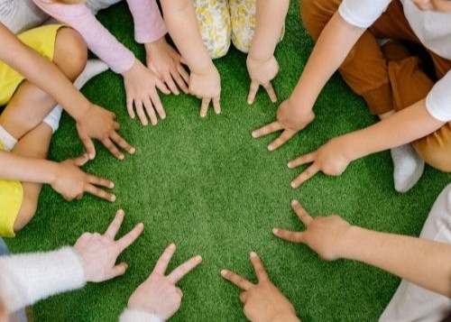
„Bylo to fajn."
„Jste prostě skvělí! Jsem neskutečně vděčná, že jsem se mohla zúčastnit a je mi líto, že nedorazilo víc lidí… ale budu držet všechny palce a zároveň věřit, že se zúčastní příště lidí daleko více! Já vás chválím, kudy chodím!"
„Moc děkuji za úžasný festival. Na to, že to byl první ročník, tak jste měli vše skvěle zorganizované a popsané. Přijela jsem za vámi z Děčína a příští rok rozhodně přijedu zase. Děkuji za vaši skvělou práci."
„Děkuji za vaši práci, panelová diskuze a koncert – to byla pecka. Těším se na další ročník."
„Chtěla bych poděkovat a ocenit otevřenost realizátorů k danému tématu."
„Klidně bych uvítal i více témat s tím spojených."